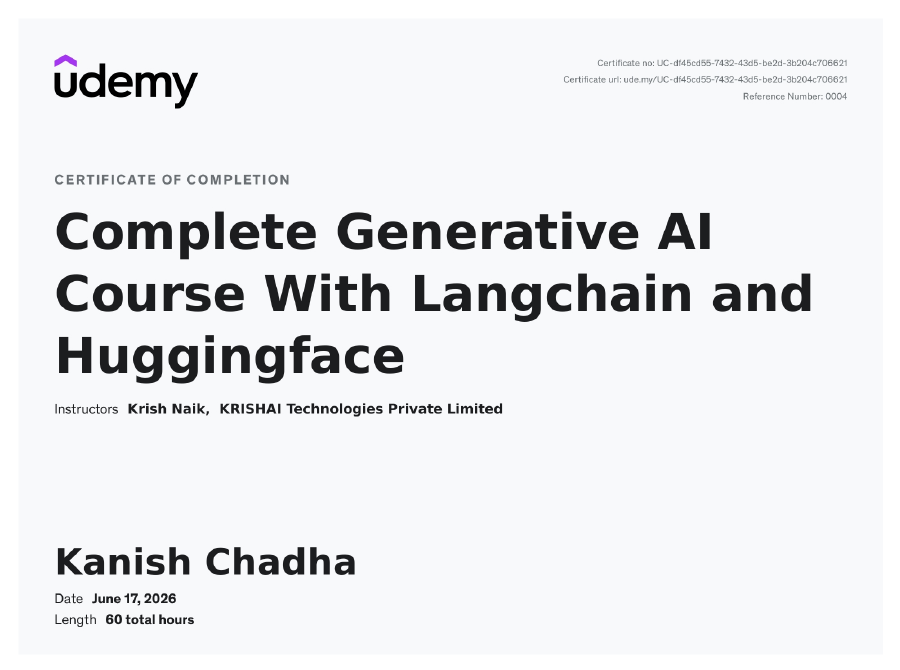
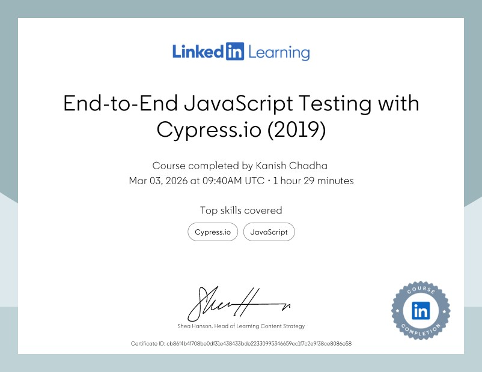
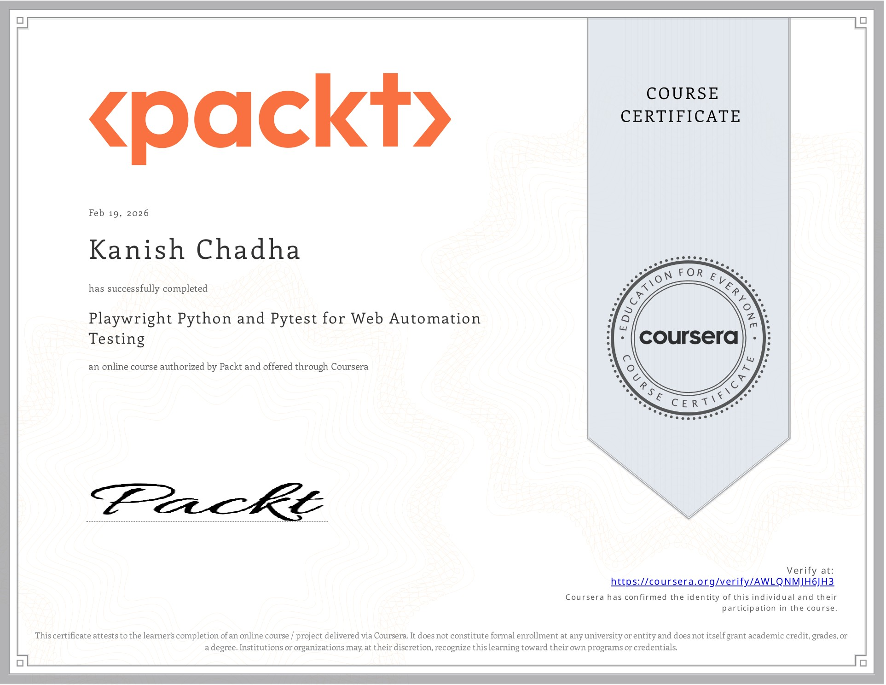
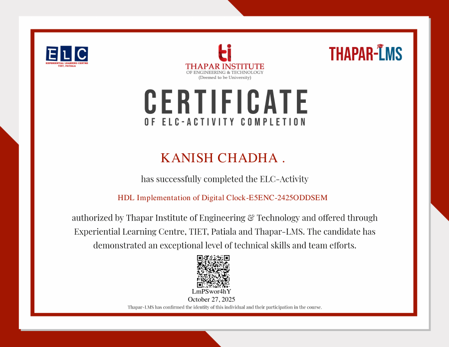
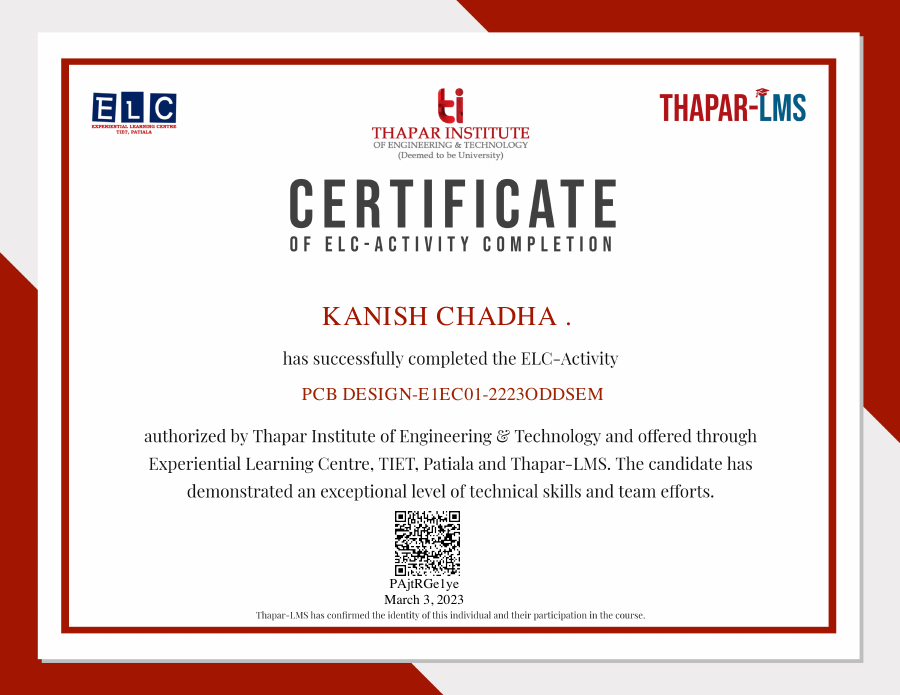

Build mode
I enjoy taking unclear ideas and pushing them into working demos with real screens, flows, and proof.About
I like solutions that make complicated work feel controlled.
I am a Computer and Electronics Engineering student at Thapar Institute of Engineering and Technology, currently working as an SDE intern on Oracle Intelligent Communication Orchestration. My work sits between product engineering, backend reliability, frontend quality, embedded systems, and applied AI.
The projects I care about most are the ones where the interface is only the surface: behind it there is access control, auditability, latency work, test coverage, and a clear operating model.
I am open to new ideas and usually searching for the next useful thing to build, especially when it turns an unclear problem into a working product or solution.
Welcome to the part of the portfolio that is less resume and more me: I like making things, meeting people, joining rooms where ideas move fast, and saying yes to hackathons or side quests when there is something useful to execute.
Outside code, I like being around people and motion: sports, new connections, hackathons, food, creative work, and art in any form. Basketball and pickleball are my strongest games, but if there is a sport being played, I will usually want to be part of it.
side demos
basketball
pickleball
hackathons
new connections
food
art
Get to know me
Not just a project list.
A few things that usually explain how I work and what I bring into a team.
People mode
I like making new connections, joining teams quickly, and being in rooms where everyone is building.Play mode
Basketball and pickleball are my forte, but I am usually ready for any sport that gets people moving.Creative mode
Food, art, design, and creative experiments keep the technical side from becoming too mechanical.Two roles
Choose a track. Software developer depth with electronics range.
Software Developer
Cloud, full-stack, and AI agent solutions
I work on backend APIs, React interfaces, test automation, distributed workflows, and security-heavy agent products where observability and policy enforcement matter.
React
Node.js
Oracle orchestration
Kafka
MCP
Open SDE portfolio
APIs, React, orchestration workflows, AI agents, testing, and backend reliability.
Click to explore SDE
Electronics / Embedded Systems
Edge inference, hardware control, and robotics
I also build at the hardware-software boundary, connecting computer vision pipelines to embedded mobility controls and validating real-time behavior on constrained devices.
NVIDIA DeepStream
CUDA
YOLOv8
JetBot
C++
Open Electronics portfolio
Embedded inference, robotics, CUDA tuning, PCB work, HDL, and hardware interfaces.
Click to explore Electronics
Certificates
Verified credentials across testing, cloud AI, GenAI, and electronics.

Oracle Certified
Oracle Cloud Infrastructure 2025 AI Foundations Associate
Oracle Cloud Infrastructure AI Foundations credential covering cloud AI concepts, GenAI fundamentals, and Oracle AI services.
Open certificate
Udemy
Complete Generative AI Course With Langchain and Huggingface
LangChain, Hugging Face, GenAI application workflows, and production-oriented AI patterns.
Open certificate
LinkedIn Learning
End-to-End JavaScript Testing with Cypress.io
End-to-end JavaScript testing workflows for reliable product UI validation.
Open certificate{kind=link}

Coursera / Packt
Playwright Python and Pytest for Web Automation Testing
Browser automation testing, pytest workflows, and UI validation practice.
Open certificate{kind=link}
Udemy
Microsoft Power BI Desktop for Business Intelligence
Business intelligence dashboards, data modeling, reporting, and analytics workflows.
Open certificate
ELC Activity
HDL Implementation of Digital Clock
Digital design and HDL implementation practice through a clock system activity.
Open certificateELC Activity
DC Power Supply Design
Electronics design activity focused on DC power supply fundamentals and implementation.
Open certificateELC Activity
PCB Fabrication
Hands-on PCB fabrication exposure, from physical board workflow to lab validation.
Open certificate
ELC Activity
PCB Design
PCB layout and design fundamentals for electronics prototyping and circuit workflows.
Open certificate